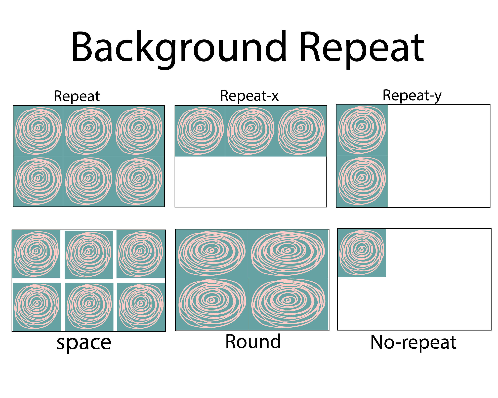
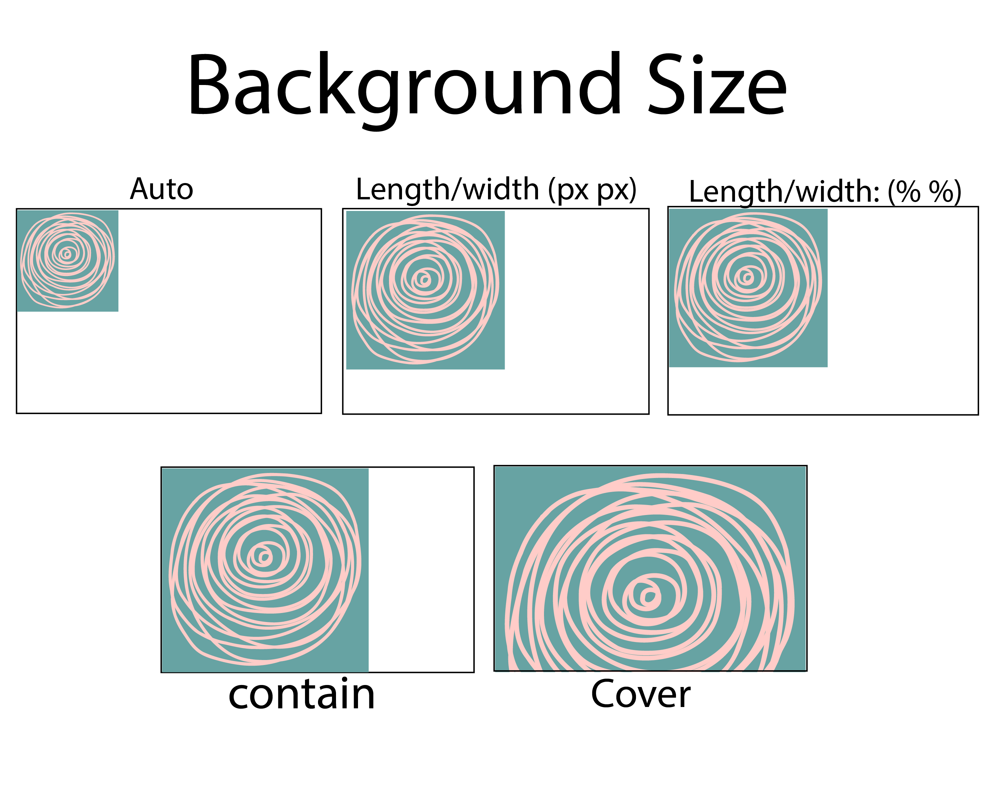
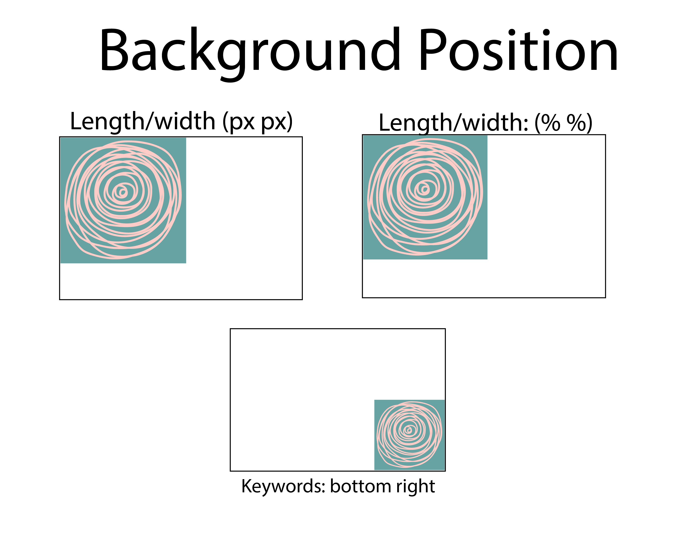
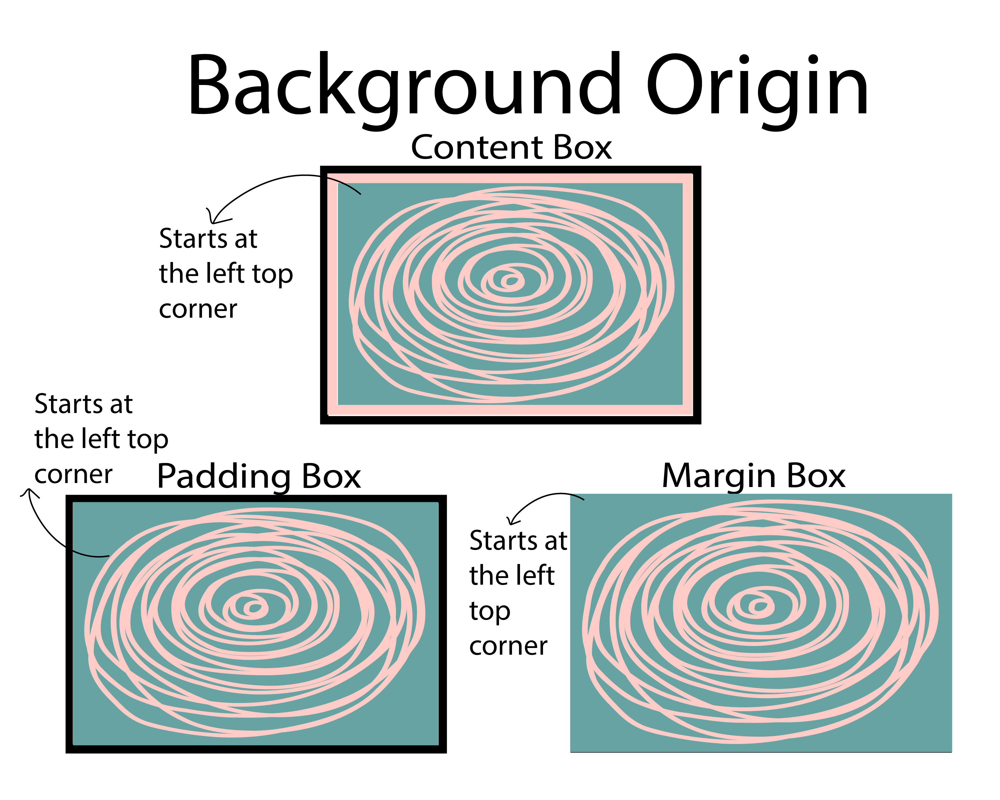
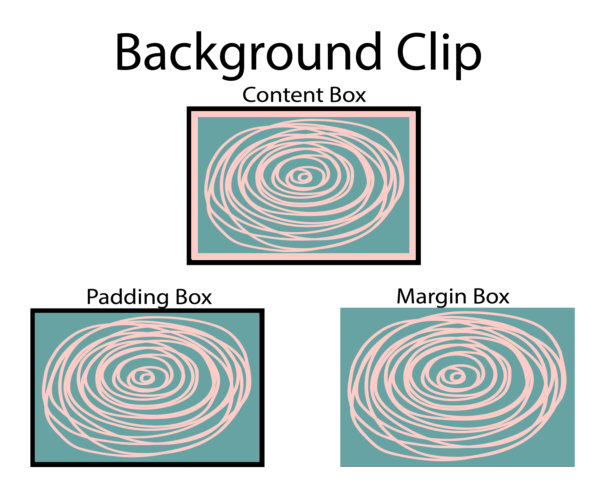

Background Image Properties
The overall look and feel are essential considerations when designing a website, as they play a part in conveying the message. One way that a designer can achieve this is through the use of a background image. This CSS allows you to use any image created or found online as the website's background. Designers can use many properties to affect your background; the main elements are background-repeat, background-size, background position, background-origin, and background clip.
Background Repeat: Sometimes, one small image will not cut it as the website's background. However, there is a way to adjust without finding a new image: the background-repeat element. This CSS element sets how background images repeat. A background image can be repeated along the horizontal and vertical axes, creating a repeating pattern. The designer can recount so many times without clipping and can be squished and stretched to fill the space. If you make a mistake, you can set it back to its initial state and have the image inherit any elements from the parent element connected to it.
Background Size The background-size element allows the background to be set to a specific size. A designer can fix this with percentages or pixels to set the length and width of the image. While you can give two values, placing only one value will put the other value to auto. You can add a keyword to specify to cover a section, stretching the image with its full size intact, even if you move the window. The designer can also contain the background image, which will keep the image at its size even if you move the window. The designer can return the image to its original state and inherit any elements from the parent element.
Background Position This property gives the first appearance and position of the image. By using specific values, you can change the position of the picture. A designer can use keywords to position the image from its original state by using words like top-left, left, center, and bottom-right, to name a few. You can also use length values in px to position the elements. The first value moves the image horizontally, while the second value moves the image vertically. The image can also be set with percentages, although it differs from length values. The percent values will move the image to a certain percentage of the webpage. The image can be transferred back to its original position if there are mistakes and can inherit any element from the parent.
Background Origin Another vital background property to consider is the background-origin. This property tells the image where to start as the background, which can range from a whole section to the border of a page. The original place to start is the padding box, which begins from the left edge of the padding box and fills the entire section, not going into the border. The designer can also set its origin with the border box value, starting from the border's top left. The last value, the content box, starts at the top left and fills the content box, not going into the padding section and the border. The designer can also return the image to its original state and inherit any elements from the parent.
Background Clip The last background CSS element is the background clip. Like the previous property, this element crops the background image to fit in the desired location. The border-box value is the traditional method for using this element, as it lets the image go all the way to the edge of the border. The padding box value keeps the image from going out of the padding and not into the border. The content box value fits the image in the box and extends to the padding or the border. The background-clip can also inherit any elements from its parent element and return to its initial state if mistakes happen.
